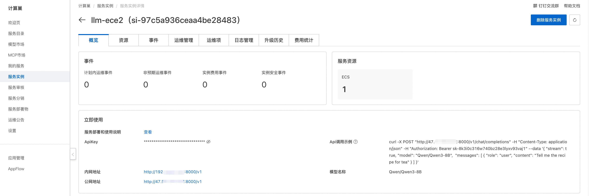
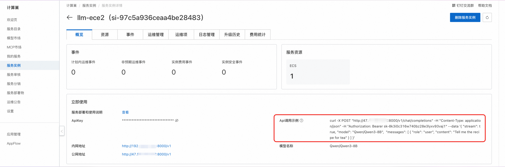

简介
9 月 19 日云栖大会，阿里云发布通义千问新一代开源模型 Qwen2.5，旗舰模型 Qwen2.5-72B 性能超越 Llama-405B。Qwen2.5 全系列模型都在 18T tokens 数据上进行预训练，相比 Qwen2，整体性能提升 18%以上，拥有更多的知识、更强的编程和数学能力。Qwen2.5-72B 模型在 MMLU-rudex 基准（考察通用知识）、MBPP 基准（考察代码能力）和 MATH 基准（考察数学能力）的得分高达 86.8、88.2、83.1。
Qwen2.5 支持高达 128K 的上下文长度，可生成最多 8K 内容。模型拥有强大的多语言能力，支持中文、英文、法文、西班牙文、俄文、日文、越南文、阿拉伯文等 29 种以上语言。模型能够丝滑响应多样化的系统提示，实现角色扮演和聊天机器人等任务。在指令跟随、理解结构化数据（如表格）、生成结构化输出（尤其是 JSON）等方面 Qwen2.5 都进步明显。
语言模型方面，Qwen2.5 开源了 7 个尺寸，0.5B、1.5B、3B、7B、14B、32B、72B。通义千问 2.5-32B-Instruct（Qwen2.5-32B-Instruct）是由通义千问 2.5-32B（Qwen2.5-32B）经过指令跟随微调后得到的版本，能够根据指令和历史对话，生成符合指令的文本。
使用说明
在完成模型部署后，可以在计算巢服务实例概览页面看到模型的使用方式，里面提供了Api调用示例、内网访问地址、公网访问地址和ApiKey，下面会分别介绍如何访问使用。

API调用
Curl命令调用

Curl命令调用可以直接使用服务实例概览页面中的Api调用示例，调用模型API的具体结构如下：
其中${ServerIP}可以填写内网地址或公网地址中的IP地址，${ApiKey}为ApiKey，${ModelName}为模型名称。
curl -X Post http://${ServerIP}:8000/v1/chat/completions \
-H "Content-Type: application/json" \
-H "Authorization: Bearer ${ApiKey}" \
-d '{
"model": "${ModelName}",
"messages": [
{
"role": "user",
"content": "给闺女写一份来自未来2035的信，同时告诉她要好好学习科技，做科技的主人，推动科技，经济发展；她现在是3年级"
}
]
}'
Python调用
以下为 Python 示例代码： 其中${ApiKey}需要填写页面上的ApiKey；${ServerUrl}需要填写页面上的公网地址或内网地址，需要带上/v1。
from openai import OpenAI
##### API 配置 #####
openai_api_key = "${ApiKey}"
openai_api_base = "${ServerUrl}"
client = OpenAI(
api_key=openai_api_key,
base_url=openai_api_base,
)
models = client.models.list()
model = models.data[0].id
print(model)
def main():
stream = True
chat_completion = client.chat.completions.create(
messages=[
{
"role": "user",
"content": [
{
"type": "text",
"text": "你好，介绍一下你自己，越详细越好。",
}
],
}
],
model=model,
max_completion_tokens=1024,
stream=stream,
)
if stream:
for chunk in chat_completion:
print(chunk.choices[0].delta.content, end="")
else:
result = chat_completion.choices[0].message.content
print(result)
if __name__ == "__main__":
main()